Chapter 8: Side Reactions on Hydroxyl and Carboxyl Groups in Peptide Synthesis
羟基和羧基在多肽合成中的副反应
本章讨论多肽合成中与羟基和羧基相关的副反应。羧基是肽键构建的基础，但在合成过程中可能参与酰亚胺形成、酯交换、不必要的酯化等副反应。羟基由于显著的亲核性，可介导酰基迁移并导致肽链断裂。
Asp/Glu在多肽合成中最有害的副反应是天冬氨酰亚胺/戊二酰亚胺的形成。此外，Asp/Glu侧链保护酯还容易发生酯交换副反应。
在Boc策略中，通过碱催化取代反应将氨基酸固定在氯甲基树脂（Merrifield树脂）上。催化剂包括Cs盐、三乙胺（TEA）或四甲基氢氧化铵（TMAH）。实验表明TMAH的催化效果优于常规Cs盐。然而，当使用Boc-Asp(OBzl)/Glu(OBzl)-OH进行树脂上样时，TMAH会同时催化侧链苄酯的酯交换反应。
如图8.1所示，在甲醇溶剂中，侧链苄酯被转化为甲酯（Asp(OMe)/Glu(OMe)），产生+14 amu的杂质。这是因为甲酯在HF介导的侧链全脱保护步骤中不能再生游离Asp/Glu。常规Cs盐催化剂引起的酯交换程度较TMAH小。
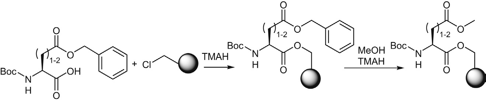
Figure 8.1 Boc-Asp(OBzl)/Glu(OBzl)-OH上样Merrifield树脂时的酯交换副反应
有趣的是，上述酯交换过程可以被有意利用：用TMAH/叔丁醇在高温（70°C）处理肽基Merrifield树脂，不仅将Asp(OBzl)/Glu(OBzl)转化为OtBu保护形式，还同时将肽C端转化为叔丁酯，并使肽链从固相载体上释放（图8.2）。这一锅法策略对于液相片段缩合尤其有价值。
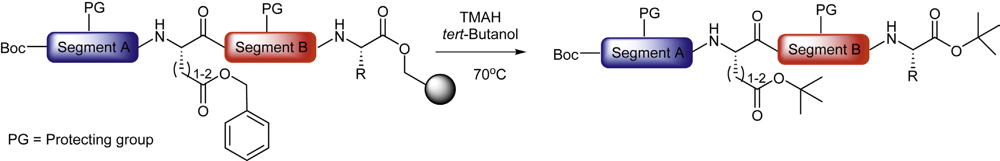
Figure 8.2 TMAH/叔丁醇介导的肽从Merrifield树脂上酯交换裂解
甲醇和乙腈是RP-HPLC纯化多肽时常用的有机洗脱剂。甲醇因成本优势在工业领域仍被使用，但其局限性是Asp/Glu侧链羧酸可能发生甲酯化。在酸性条件下浓缩HPLC馏分时，酯化反应被加剧，产生+14 amu的甲酯杂质。
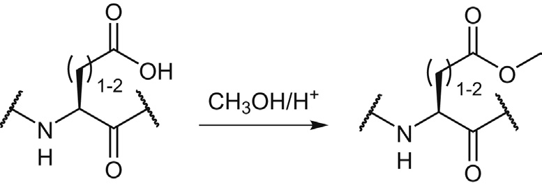
Figure 8.3 Asp/Glu侧链羧酸的甲酯化
为减少甲酯化副反应，需要严格控制浓缩过程的参数（温度、真空度、浓缩比例）。对于极易发生甲酯化的肽，应使用乙腈替代甲醇。类似地，树脂用甲醇洗涤后残留的甲醇未充分去除也可能导致甲酯化副反应。
Ser/Thr由于beta-羟基的亲核性，容易受到多种副反应的影响。Thr的二级beta-羟基亲核性较弱，因此Thr的副反应程度通常低于Ser。
Alloc保护基因其与其他氨基酸保护基的正交性而被广泛应用。在Pd(0)催化的Alloc脱保护过程中，可能发生O-烯丙基化副反应（图8.4）。生成的Ser(All)副产物对Pd(0)催化剂稳定，无法通过延长Pd(0)处理来再生游离羟基。不过在有效烯丙基清除剂存在下，不会导致严重的副反应。
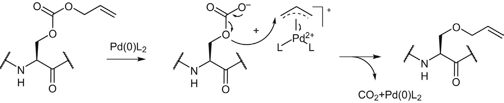
Figure 8.4 Pd(0)催化Alloc脱保护时Ser的O-烯丙基化副反应
在"最小保护"策略中，侧链未保护的Ser/Thr可直接参与肽组装。然而，当酰化试剂大量过量，或反应迟缓时，未保护羟基的酰化副反应不能完全排除。Ser/Thr侧链酰化还可能引发后续修饰：酰基O→N迁移（导致肽链终止或重复偶联），以及beta-消除（生成delta-Ala杂质）。
Ser/Thr可分别在甲酸、乙酸和TFA中转化为相应的甲酸酯、乙酸酯和三氟乙酸酯。
含有N端酰基-Ser/Thr结构（如Ac-Ser/Thr、For-Ser/Thr、Palm-Ser/Thr）的肽在侧链全酸解脱保护步骤中可能发生N→O酰基迁移。这些杂质在碱处理下可进一步发生beta-消除转化为delta-Ala衍生物。建议用弱碱处理使酰基迁移逆向回到Na-酰基方向。
含有beta-羟基的氨基酸在碱性条件下易发生beta-消除。当侧链羟基连接吸电子基团时，beta-消除倾向显著增强。多种Ser/Thr衍生物如Ser/Thr(Tos)、Ser/Thr(Mesyl)、Ser(SO2Bzl)、Ser(Boc)等可发生碱催化beta-消除。碱浓度、温度、反应时间和肽序列都会影响beta-消除倾向。Thr的beta-消除敏感性远低于Ser。
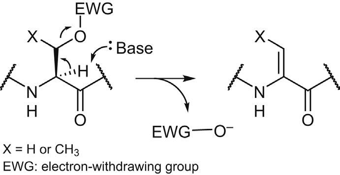
Figure 8.5 Ser/Thr衍生物的beta-消除
碳二亚胺类偶联试剂也可引发Ser/Thr的beta-消除（CuCl可催化该过程，图8.7）。CDI也能通过活化羟基引发beta-消除（图8.6）。这些活化过程实际上有时被有意利用来制备delta-Ala/delta-Abu衍生物。
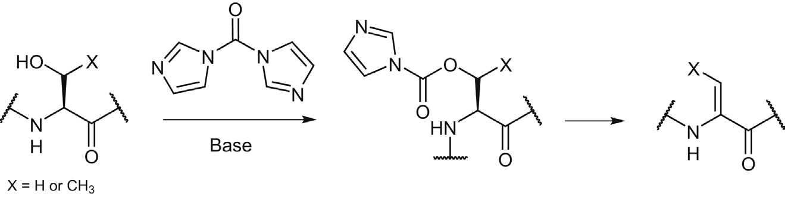
Figure 8.6 CDI诱导的Ser/Thr beta-消除
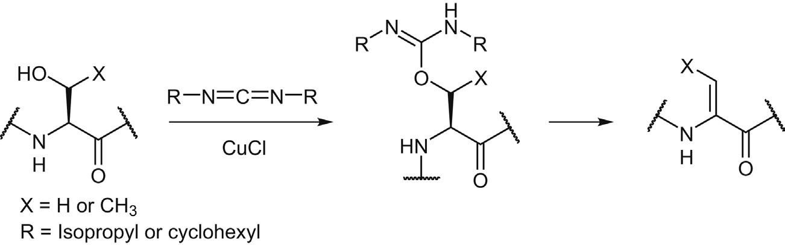
Figure 8.7 碳二亚胺诱导的Ser/Thr beta-消除
N端侧链未保护的Ser/Thr，当肽的Na-氨基为氨基甲酸酯型保护时，在碱性条件下beta-羟基可亲核攻击骨架氨基甲酸酯，生成噁唑烷烷酯副产物（图8.8）。建议在碱处理前保护N端Ser/Thr的beta-羟基，或使用更温和的水解条件。
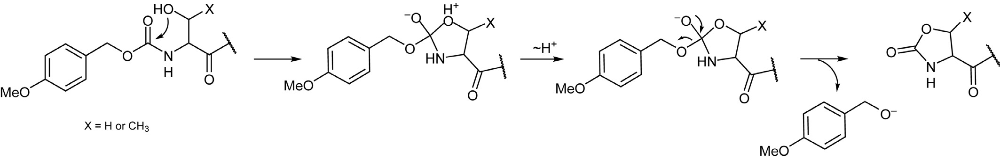
Figure 8.8 Na-Moz-Ser/Thr肽的噁唑烷烷酯形成机制
序列内部的未保护Ser/Thr也可能通过beta-羟基亲核攻击引发类似副反应（图8.9），可生成异构肽酯或噁唑烷烷啉/噁唑烷烷咽衍生物。
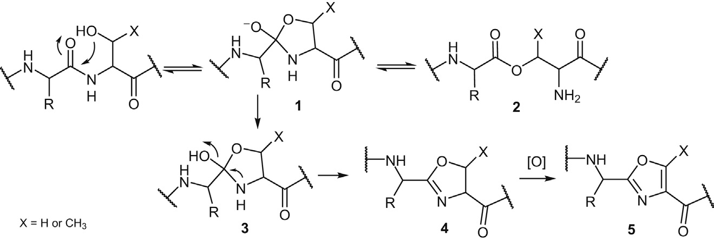
Figure 8.9 -Ser/Thr-肽转化为异构肽酯或噁唑烷烷啉/噁唑烷烷咽的机制
侧链未保护的Ser/Thr含有beta-羟基羧基结构，理论上可能发生逆醛醇裂解。如图8.12所示，Ser/Thr在碱处理下可发生C-alpha-C-beta键断裂，降解为甲醛/乙醛和肽烯醇盐碎片，后者重排为甘氨酸衍生物。
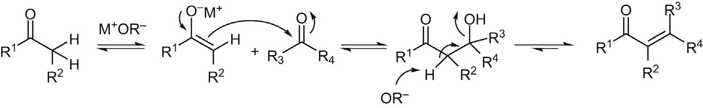
Figure 8.10 侧链未保护Ser/Thr中的beta-羟基羧基结构
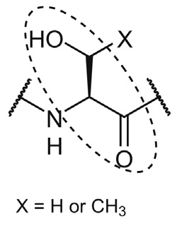
Figure 8.11 碱催化醛醇缩合机制
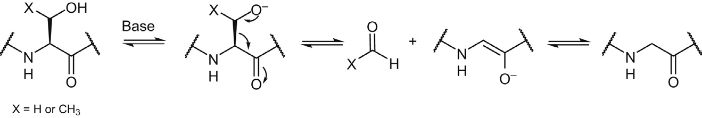
Figure 8.12 Ser/Thr肽的碱催化逆醛醇裂解
1. Asp/Glu侧链羧酸副反应：碱催化酯交换（TMAH > Cs盐）和酸性条件下的甲酯化（HPLC甲醇洗脱剂和树脂洗涤残留甲醇）。
2. Ser/Thr侧链羟基副反应：烷基化、酰化、酰基N→O迁移、beta-消除、噁唑烷烷酯形成以及逆醛醇裂解。
3. 关键防范策略：选择合适的催化剂（Cs盐优于TMAH）、用乙腈替代甲醇洗脱、避免甲醇洗涤树脂、保护Ser/Thr的beta-羟基、使用温和条件、评估酰基迁移风险。